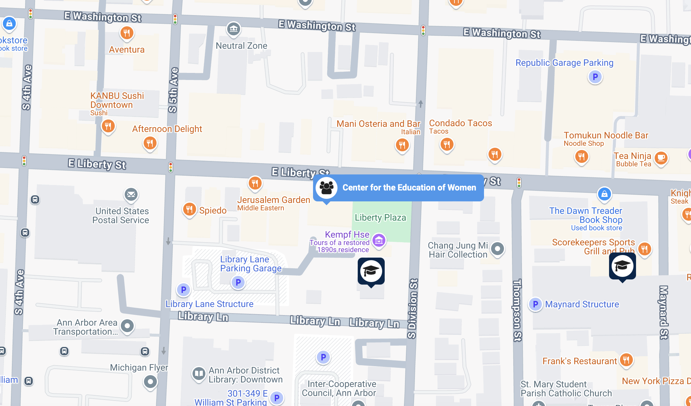
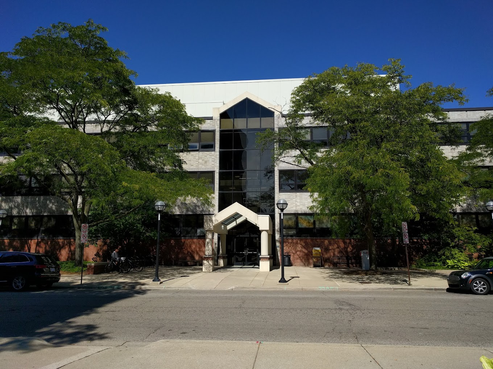
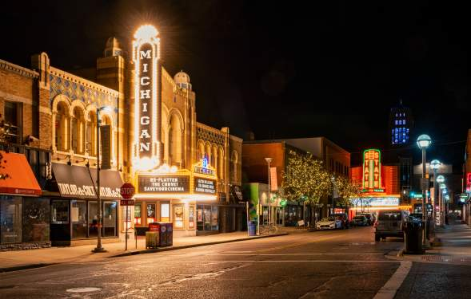
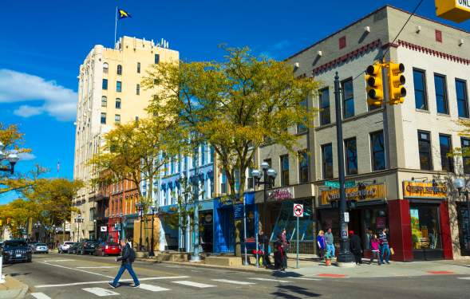
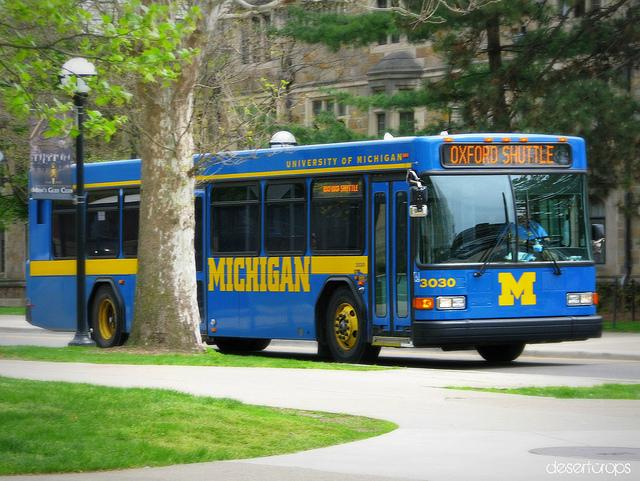
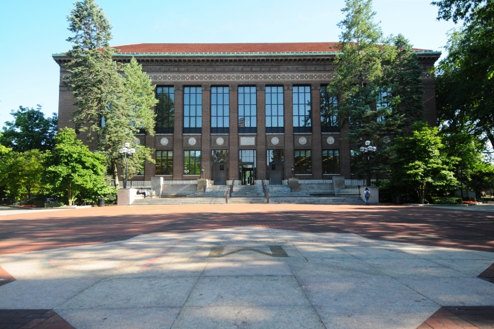
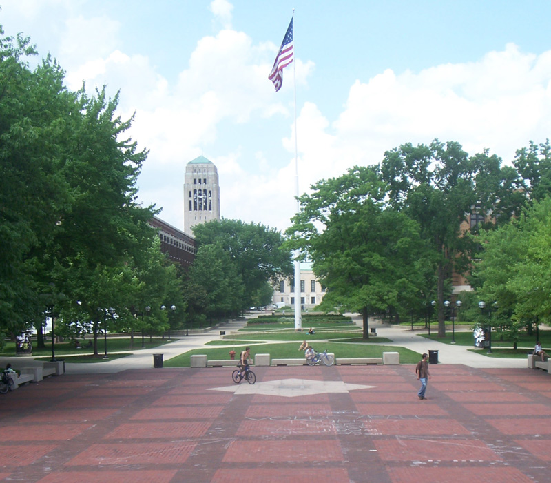

At the University of Michigan School of Information (UMSI), we are committed to supporting our students' academic success by offering a wide array of resources and services. Our academic advising team provides personalized guidance to help you navigate your curriculum, select courses, and address any academic challenges or questions you may encounter during your studies.
To ensure members of the University of Michigan community—whether on a tight budget or physically restrained from getting to a grocery store—receive equitable access to healthy, nutritious, and nourishing food.
Location
Address: 420 S State St Ann Arbor, MI 48109; Phone: 734-936-2794
We believe in fair and equitable access to food and other basic resources. This website has been created to share information about the resources available to students.
At CEW+, we navigate circumstantial barriers by providing academic, financial, and professional support to help you reach your personal potential.

Location
Address: University of Michigan
330 E. Liberty Street, 2nd Floor
Ann Arbor, MI 48104-2274
Student Community Resources
International Student Support

U-M International Center - Your Home Away from Home
The International Center serves as your primary resource hub, offering comprehensive support to help you thrive at U-M. Our dedicated staff understands the unique challenges international students face and is here to assist you every step of the way.
Expert guidance on visa matters, work authorization, and immigration regulations. Schedule a virtual appointment with our advisors for personalized support.
Language Exchange Programs
Join our weekly conversation circles to practice English and meet local students. We also offer writing workshops specifically designed for international students.
Cultural Adjustment Resources
Attend our "Living in the U.S." workshop series covering topics from American classroom culture to daily life skills. Connect with peer mentors who can share their experiences.
Living in Ann Arbor


Vibrant Downtown Ann Arbor - Your New Home
Ann Arbor consistently ranks as one of America's best college towns, offering a perfect blend of academic excellence and quality of life. Let us help you discover what makes this city special.
Housing Guide
Finding the right place to live is crucial for your success. Here's what you need to know:
On-Campus Housing
Explore undergraduate housing options at Munger and Northwood Community Apartments. Early application is recommended as spaces fill quickly.
Off-Campus Living
Popular student neighborhoods include Kerrytown, Old West Side, and South U area. Average rent ranges from $800-1500 for shared apartments.
Transportation Tips

Free Campus Bus Service for Students
Getting around Ann Arbor is easy with these options:
U-M Blue Buses: Free campus-wide service
Download the Michigan App for real-time bus tracking. Major routes run every 10-15 minutes during peak hours.
AAATA (The Ride): City-wide public transit
Free for students with Mcard. Connects campus to downtown, shopping centers, and nearby cities.
Winter Survival Guide


Beautiful but Cold: Michigan Winters
Michigan winters can be challenging but manageable with proper preparation:
Essential Gear
Invest in quality winter boots, a warm coat, and layered clothing. The M-Gear shop in the Michigan Union offers student discounts.
Winter Activities
Embrace the season with ice skating at Yost Ice Arena, skiing at local parks, or enjoying indoor events at the Michigan Theater.